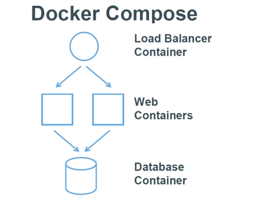

Docker-Compose
Table of Contents
简介
Dockerfile 可以让用户管理一个单独的应用容器；而 Compose 则允许用户在一个模板（YAML 格式）中定义一组相关联的应用容器（被称为一个 project，即项目），例如一个 Web 服务容器再加上后端的数据库服务容器等
 该项目由 Python 编写，实际上调用了 Docker 提供的 API 来实现。
安装(略)
使用
术语
- 服务(service)：一个应用容器，实际上可以运行多个相同镜像的实例
- 项目(project)：由一组关联的应用容器组成的一个完整业务单元
一个项目可以由多个服务（容器）关联而成，Compose面向项目进行管理
场景
一个经典的 Web 项目：一个Haproxy，挂载三个Web容器
实现
创建一个compose-haproxy-web目录，作为项目工作目录，并在其中分别创建两个子目录：haproxy 和 web
web子目录
用Python程序来提供一个简单的HTTP服务，打印出访问者的IP和实际的本地IP
index.py
编写一个index.py作为服务器文件
#!/usr/bin/python #authors: yeasy.github.com #date: 2013-07-05 import sys import BaseHTTPServer from SimpleHTTPServer import SimpleHTTPRequestHandler import socket import fcntl import struct import pickle from datetime import datetime from collections import OrderedDict class HandlerClass(SimpleHTTPRequestHandler): def get_ip_address(self,ifname): s = socket.socket(socket.AF_INET, socket.SOCK_DGRAM) return socket.inet_ntoa(fcntl.ioctl( s.fileno(), 0x8915, # SIOCGIFADDR struct.pack('256s', ifname[:15]) )[20:24]) def log_message(self, format, *args): if len(args) < 3 or "200" not in args[1]: return try: request = pickle.load(open("pickle_data.txt","r")) except: request=OrderedDict() time_now = datetime.now() ts = time_now.strftime('%Y-%m-%d %H:%M:%S') server = self.get_ip_address('eth0') host=self.address_string() addr_pair = (host,server) if addr_pair not in request: request[addr_pair]=[1,ts] else: num = request[addr_pair][0]+1 del request[addr_pair] request[addr_pair]=[num,ts] file=open("index.html", "w") file.write("<!DOCTYPE html> <html> <body><center><h1><font color=\"blue\" face=\"Georgia, Arial\" size=8><em>HA</em></font> Webpage Visit Results</h1></center>"); for pair in request: if pair[0] == host: guest = "LOCAL: "+pair[0] else: guest = pair[0] if (time_now-datetime.strptime(request[pair][1],'%Y-%m-%d %H:%M:%S')).seconds < 3: file.write("<p style=\"font-size:150%\" >#"+ str(request[pair][1]) +": <font color=\"red\">"+str(request[pair][0])+ "</font> requests " + "from <<font color=\"blue\">"+guest+"</font>> to WebServer <<font color=\"blue\">"+pair[1]+"</font>></p>") else: file.write("<p style=\"font-size:150%\" >#"+ str(request[pair][1]) +": <font color=\"maroon\">"+str(request[pair][0])+ "</font> requests " + "from <<font color=\"navy\">"+guest+"</font>> to WebServer <<font color=\"navy\">"+pair[1]+"</font>></p>") file.write("</body> </html>"); file.close() pickle.dump(request,open("pickle_data.txt","w")) if __name__ == '__main__': try: ServerClass = BaseHTTPServer.HTTPServer Protocol = "HTTP/1.0" addr = len(sys.argv) < 2 and "0.0.0.0" or sys.argv[1] port = len(sys.argv) < 3 and 80 or int(sys.argv[2]) HandlerClass.protocol_version = Protocol httpd = ServerClass((addr, port), HandlerClass) sa = httpd.socket.getsockname() print "Serving HTTP on", sa[0], "port", sa[1], "..." httpd.serve_forever() except: exit()
index.html
生成一个临时的index.html文件，其内容会被index.py更新
$ touch index.html
Dockerfile
生成一个Dockerfile
FROM python:2.7 WORKDIR /code ADD . /code EXPOSE 80 CMD python index.py
haproxy 目录
haproxy.cfg
global
log 127.0.0.1 local0
log 127.0.0.1 local1 notice
defaults
log global
mode http
option httplog
option dontlognull
timeout connect 5000ms
timeout client 50000ms
timeout server 50000ms
listen stats :70
stats enable
stats uri /
frontend balancer
bind 0.0.0.0:80
mode http
default_backend web_backends
backend web_backends
mode http
option forwardfor
balance roundrobin
server weba weba:80 check
server webb webb:80 check
server webc webc:80 check
option httpchk GET /
http-check expect status 200
docker-compose.yml
编写 docker-compose.yml 文件，这个是 Compose 使用的主模板文件。内容十分简单，指定 3 个 web 容器，以及 1 个 haproxy 容器
weba:
build: ./web
expose:
- 80
webb:
build: ./web
expose:
- 80
webc:
build: ./web
expose:
- 80
haproxy:
image: haproxy:latest
volumes:
- haproxy:/haproxy-override
- haproxy/haproxy.cfg:/usr/local/etc/haproxy/haproxy.cfg:ro
links:
- weba
- webb
- webc
ports:
- "80:80"
- "70:70"
expose:
- "80"
- "70
运行
现在 compose-haproxy-web 目录长成下面的样子：
compose-haproxy-web
├── docker-compose.yml
├── haproxy
│ └── haproxy.cfg
└── web
├── Dockerfile
├── index.html
└── index.py
在该目录下执行 docker-compose up 命令，会整合输出所有容器的输出
$sudo docker-compose up
Recreating composehaproxyweb_webb_1...
Recreating composehaproxyweb_webc_1...
Recreating composehaproxyweb_weba_1...
Recreating composehaproxyweb_haproxy_1...
Attaching to composehaproxyweb_webb_1, composehaproxyweb_webc_1, composehaproxyweb_weba_1, composehaproxyweb_haproxy_1
访问本地的 80 端口，会经过 haproxy 自动转发到后端的某个 web 容器上，刷新页面，可以观察到访问的容器地址的变化
访问本地 70 端口，可以查看到 haproxy 的统计信息
还可以使用 consul、etcd 等实现服务发现，这样就可以避免手动指定后端的 web 容器了，更为灵活
Compose 命令
基本的使用格式是：
docker-compose [options] [COMMAND] [ARGS...]
选项
- –verbose：输出更多调试信息
- –version ：打印版本并退出
- -f, –file FILE ：使用特定的 compose 模板文件，默认为 docker-compose.yml
- -p, –project-name NAME ：指定项目名称，默认使用目录名称
命令
build
构建或重新构建服务，服务一旦构建后，将会带上一个标记名，例如 web_db
help
获得一个命令的帮助
kill
通过发送 SIGKILL 信号来强制停止服务容器。支持通过参数来指定发送的信号，例如：
$ docker-compose kill -s SIGINT
logs
查看服务的输出
port
打印绑定的公共端口
ps
列出所有容器
pull
拉取服务镜像
rm
删除停止的服务容器
run
在一个服务上执行一个命令，启动一个 ubuntu 服务，执行 ping docker.com 命令：
$ docker-compose run ubuntu ping docker.com
默认情况下，所有关联的服务将会自动被启动，除非这些服务已经在运行中。
该命令类似启动容器后运行指定的命令，相关卷、链接等等都将会按照期望创建，两个不同点：
- 给定命令将会覆盖原有的自动运行命令
- 不会自动创建端口，以避免冲突
如果不希望自动启动关联的容器，可以使用 –no-deps 选项，例如：
$ docker-compose run --no-deps web python manage.py shell
将不会启动 web 容器所关联的其它容器
scale
设置同一个服务运行的容器个数。通过 service=num 的参数来设置数量。例如：
$ docker-compose scale web=2 worker=3
start
启动一个已经存在的服务容器
stop
停止一个已经运行的容器，但不删除它。通过 docker-compose start 可以再次启动这些容器
up
构建，（重新）创建，启动，链接一个服务相关的容器
链接的服务都将会启动，除非他们已经运行
默认情况， docker-compose up 将会整合所有容器的输出，并且退出时，所有容器将会停止
如果使用 docker-compose up -d ，将会在后台启动并运行所有的容器。
默认情况，如果该服务的容器已经存在， docker-compose up 将会停止并尝试重新创建他们（保持使用 volumes-from 挂载的卷），以保证 docker-compose.yml 的修改生效。如果你不想容器被停止并重新创建，可以使用 docker-compose up –no-recreate。如果需要的话，这样将会启动已经停止的容器
环境变量
环境变量可以用来配置 Compose 的行为
以DOCKER_开头的变量和用来配置 Docker 命令行客户端的使用一样。如果使用 boot2docker , $(boot2docker shellinit) 将会设置它们为正确的值：
- COMPOSE_PROJECT_NAME：设置通过 Compose 启动的每一个容器前添加的项目名称，默认是当前工作目录的名字
- COMPOSE_FILE：设置要使用的 docker-compose.yml 的路径。默认路径是当前工作目录
- DOCKER_HOST：设置 Docker daemon 的地址。默认使用 unix:///var/run/docker.sock，与 Docker 客户端采用的默认值一致
- DOCKER_TLS_VERIFY：如果设置不为空，则与 Docker daemon 交互通过 TLS 进行
- DOCKER_CERT_PATH：配置 TLS 通信所需要的验证（ca.pem、cert.pem 和 key.pem）文件的路径，默认是 ~/.docker
yaml模板
默认的模板文件是 docker-compose.yml，其中定义的每个服务都必须通过 image 指令指定镜像或 build 指令（需要 Dockerfile）来自动构建
如果使用 build 指令，在 Dockerfile 中设置的选项(例如：CMD, EXPOSE, VOLUME, ENV 等) 将会自动被获取，无需在 docker-compose.yml 中再次设置
image
指定为镜像名称或镜像 ID。如果镜像在本地不存在，Compose 将会尝试拉去这个镜像。
image: ubuntu image: orchardup/postgresql image: a4bc65fd
build
指定 Dockerfile 所在文件夹的路径。 Compose 将会利用它自动构建这个镜像，然后使用这个镜像
build: /path/to/build/dir
command
覆盖容器启动后默认执行的命令
command: bundle exec thin -p 3000
links
链接到其它服务中的容器。使用服务名称（同时作为别名）或服务名称：服务别名 （SERVICE:ALIAS） 格式都可以
links: - db - db:database - redis
使用的别名将会自动在服务容器中的 /etc/hosts 里创建。例如：
172.17.2.186 db 172.17.2.186 database 172.17.2.187 redis
相应的环境变量也将被创建
external_links
链接到 docker-compose.yml 外部的容器，甚至 并非 Compose 管理的容器。参数格式跟 links 类似:
external_links: - redis_1 - project_db_1:mysql - project_db_1:postgresql
ports
暴露端口信息。使用宿主：容器 （HOST:CONTAINER）格式或者仅仅指定容器的端口（宿主将会随机选择端口）都可以
ports: - "3000" - "8000:8000" - "49100:22" - "127.0.0.1:8001:8001"
expose
暴露端口，但不映射到宿主机，只被连接的服务访问：
expose: - "3000" - "8000"
volumes
卷挂载路径设置。可以设置宿主机路径 （HOST:CONTAINER） 或加上访问模式 （HOST:CONTAINER:ro）:
volumes: - /var/lib/mysql - cache/:/tmp/cache - ~/configs:/etc/configs/:ro
volumes_from
从另一个服务或容器挂载它的所有卷：
volumes_from: - service_name - container_name